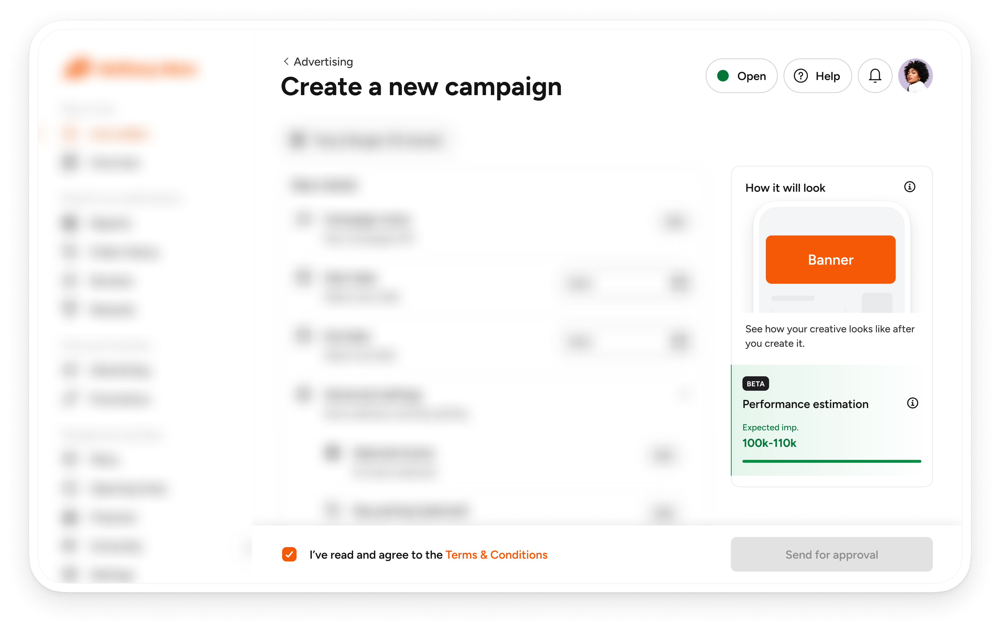
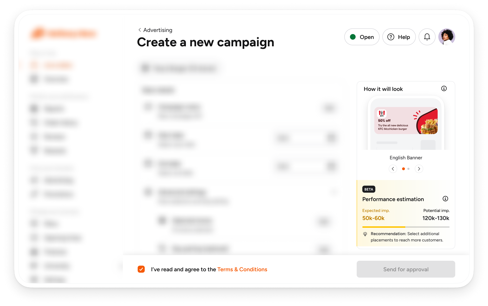
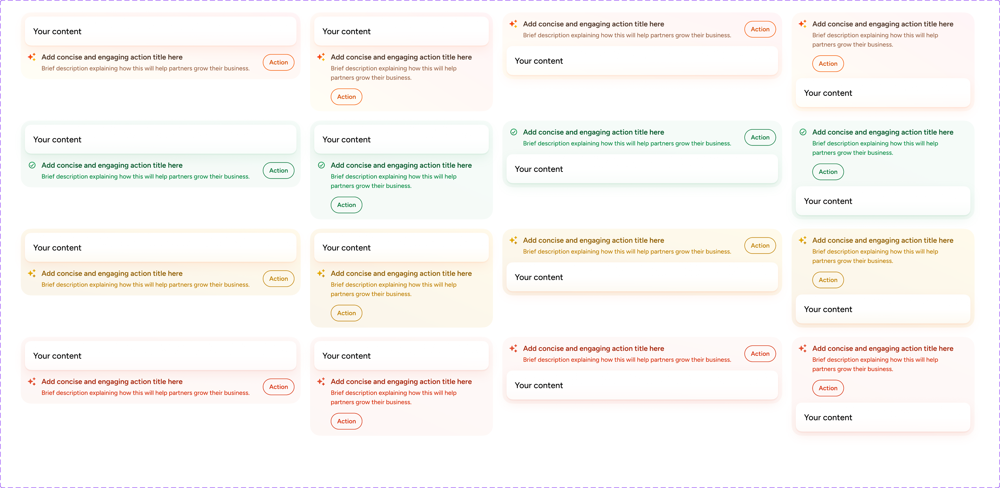
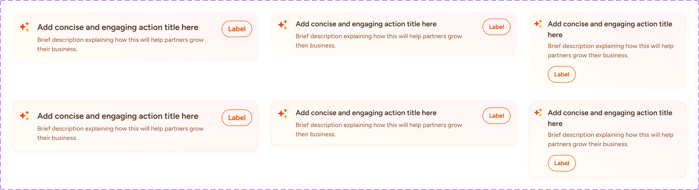
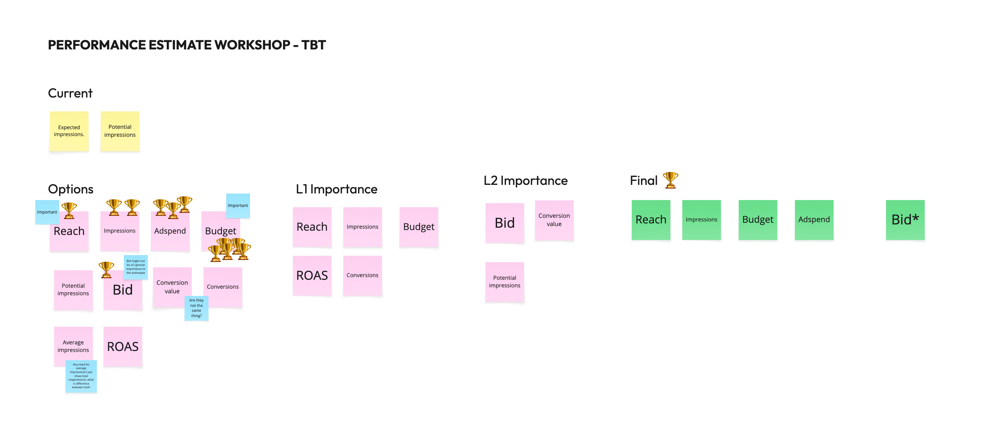

Display Ads - Estimate & recos
July 2025
A budget recommendation system that helps our vendors launch display ads and get the most out of them.

Brief
When we launched Display ads self-booking for our vendors, we also launched an estimation system that gave them a rough idea of how their ads would perform with their chosen settings. The problem was that these estimates were vague, often inaccurate and not linked to their budget, so vendors weren’t getting the results they expected from their campaigns.
Goal
Give our vendors estimates that accurately show how their campaigns will perform with their settings, and recommend a budget their campaign can actually spend, so it performs at its best and no money is wasted.
Outcome
We built a new estimation system that not only gives vendors more accurate estimates for their campaigns, but also recommends what to change, so they can make the most of every campaign.
Why was this an important problem to solve?
Our vendors wanted an accurate picture of how a campaign would perform before launching it, and the existing system couldn’t give them one. As a result, vendors either set a budget that was too big and underspent, or set one too small to last the whole campaign. Both caused a lot of friction.
From the feedback we’d been getting from vendors about the estimation experience, we narrowed their needs down to three points:
-
1
Create campaigns with the right budget, so they don’t have to keep topping it up or reducing it after the campaign goes live
-
2
See how their campaign will perform with its current settings, with more information than just potential impressions
-
3
Get clear recommendations on what to change when their campaign settings won’t deliver the best results, instead of guessing
What was there initially
Before this project, the booking flow showed a single estimate, potential impressions, and a status telling vendors whether their campaign was expected to perform at its best with their current settings. It didn’t explain why, or what to change.


How we improved on it
The first thing we did was iterate on new recommendation components. We already knew the direction we wanted: components that are easy to understand, both as text and as CTAs.


Next, we broke down what the Display ads performance estimate should show. At the time we only showed impressions, but we wanted to show more, so vendors could properly understand how their ad would perform.
To do this, we ran a workshop with our vendors, asking what they would like to see in the estimate section. These were the results:

We then designed two versions of the new estimate cards and A/B tested them.
A/B test results
We launched each option to production separately for two weeks. Here’s how it went:
Option 1
After two weeks, Hotjar showed that users were mostly clicking the “Edit” button. They weren’t clicking any of the action CTAs, not even “Apply all recommendations”.
Feedback gotten from users
We reached out to users who had interacted with it and gathered their feedback. Here’s some of what they said:
 The right-hand panel was confusing, with a lot of text, and the Ad spend/Budget part wasn’t clear
The right-hand panel was confusing, with a lot of text, and the Ad spend/Budget part wasn’t clear- They didn’t know the “Remove day parting” and “Select all stores” buttons were clickable, and thought they were just recommendations
Option 2
This was also live for two weeks, and we saw something different: users were clicking the recommendation buttons. There still wasn’t much interaction with the right-hand panel, but the recos buttons were being used.
Feedback gotten from users
We reached out to users who had interacted with it and gathered their feedback. Here’s some of what they said:
- The recos buttons are easy to notice, and it’s clear they’re clickable
- They can easily see how their ad spend compares to the recommended budget, without having to make sense of a progress bar
Final solution
We went with option 2. When vendors get to the booking page, they now see a recommended budget based on their account, what we think they can spend and their campaign settings. The recommended budget stays fixed, and their performance estimate is measured against it.
Key findings & results
After launching the update, we saw a 35% drop in complaints to account managers about budget problems, a big improvement. Vendors also trusted our recommended budget more than we expected. At first we thought they would prefer to set a custom budget, but after a few tweaks to the budget recommendation model, the recommendations became more and more accurate.
Conclusion
This was a game-changing feature for the Display ads team. It improved the campaign booking experience and helped our vendors get the most out of their budgets.
A detailed case study presentation, with metrics, prototypes and more insight into my process, is available on request.